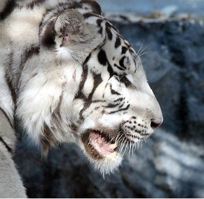
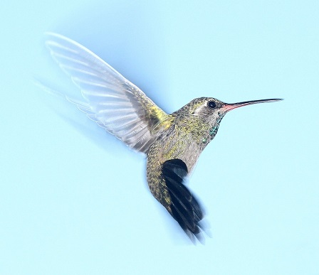

-

BENGAL TIGER
Bengal tiger is the most numerous tiger subspecies in Asia, and was estimated at fewer than 2,500 individuals by 2011. Since 2008, it is listed as Endangered on the IUCN Red List and is threatened by poaching, loss and fragmentation of habitat. None of the Tiger Conservation Landscapes within its range is considered large enough to support an effective population of more than 250 individuals.
-
FLAMINGO
The pink flamingo is included in the Red Data Books of Russia and Kazakhstan. The reason for the decline in numbers is a reduction in nesting places and a factor of anxiety.
-

HUMMING BIRD
Humming bird are the only bird in the world that can fly back. The uncontrolled catch of hummingbirds led to the fact that populations of many species were catastrophically declined, and some had to be entered in the Red Data Book. Now the largest population lives in Ecuador, Colombia and Venezuela, but in almost all areas these birds are threatened with destruction.